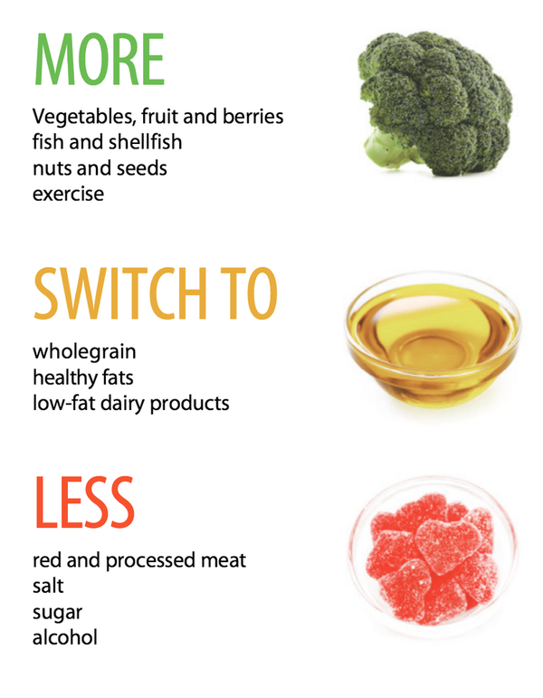

Đó là những gì được các chuyên gia kết luận sau rất nhiều nghiên cứu. Bạn sẽ cứu được rất nhiều mạng sống nếu như chuyển sang chế độ ăn chay. Cắt giảm lượng thịt đỏ hấp thụ đồng thời tăng khẩu phần rau luôn là lời khuyên được đưa ra bởi các bác sĩ chuyên khoa, vì điều đó tốt cho sức khỏe. Nhìn theo một góc độ nào đó, ngừng ăn thịt có thể biến bạn thành… siêu anh hùng cứu thế giới không chừng! Việc ăn chay có tác động cụ thể như thế nào đến Trái đất? Hãy đọc bài viết dưới đây để tìm ra câu trả lời nhé. 1. Ăn chay giúp cắt giảm hiệu ứng nhà kính Dân số thế giới đang ngày càng tăng cao với tốc độ chóng mặt, khối lượng thực phẩm tiêu thụ và cùng với đó là khối lượng khí nhà kính thải ra từ các hoạt động chăn nuôi và chế biến cũng tăng theo cấp số nhân. Theo tính toán, lượng khí nhà kính thải ra từ mọi hoạt động "ăn uống" của con người sẽ chiếm đến gần một nửa mức giới hạn khí thải chung. Vượt quá giới hạn này, hiện tượng ấm lên toàn cầu sẽ nằm ngoài mức kiểm soát là 2°C/năm. Theo tổ chức Y tế thế giới WHO, để thực sự tạo ra một sự thay đổi, cần một thực đơn "nhiều rau" hơn dành cho mọi người trên thế giới. Theo đó, nếu cả thế giới đều cắt bỏ thịt, lượng khí nhà kính giảm thiểu được sẽ là 63% và con số này có thể nâng lên đến 70% nếu chúng ta ăn chay hoàn toàn. 2. Giảm thịt để bỏ ống tiết kiệm hàng trăm tỉ đô Việc thay thế thịt bằng rau củ sẽ đem lại một khoản lợi rất lớn cho nền kinh tế. Theo các chuyên gia tính toán, nếu như thế giới này ngừng ăn thịt, nhân loại sẽ tiết kiệm được 700 tỉ đến 1000 tỉ USD - một con số rất khổng lồ. Hơn nữa, số tiền tiết kiệm được khi giảm thiểu hiệu ứng nhà kính có thể lên đến 570 tỉ USD. Đây là chó. Chó thích ăn dưa hấu. Hãy như chó. Nhưng tất nhiên, không ăn thịt cũng chưa chắc có lợi cho sức khoẻ. Tuy nhiên kết quả này có thể giúp ta hình dung được việc thay đổi chế độ ăn uống có thể mang lại lợi ích to lớn như thế nào cho xã hội. 3. Ăn rau để cứu mạng hàng triệu người Nghiên cứu cũng chỉ ra rằng việc thay đổi chế độ ăn thành ít thịt, nhiều rau cũng sẽ giúp 5,1 triệu người tránh được lưỡi hái của Thần Chết mỗi năm. Thậm chí, việc cắt bỏ thịt hay ăn chay hoàn toàn sẽ nâng con số này lên đến 7,3 và 8,1 triệu người. Một nửa số đó là nhờ vào việc giới hạn tiêu thụ thịt đỏ - thứ được WHO xác nhận có khả năng gây ung thư; nửa còn lại sống lâu hơn nhờ giảm lượng calo tiêu thụ, giúp đồng thời ngăn được rất nhiều chứng bệnh liên quan đến tim mạch. Tuy nhiên kết quả này sẽ là khác nhau tùy theo từng vùng, vì mỗi vùng có chế độ ăn riêng biệt. Nơi nào vốn đang ăn nhiều thịt, hiệu quả sẽ càng lớn. Do đó, không có gì ngạc nhiên khi phần lớn số người có thể sống lâu hơn nhờ "ăn kiêng" sẽ rơi vào các nước đang phát triển, nhất là Đông và Nam Á. Trong đó, Trung Quốc sẽ là đất nước thấy được hiệu quả rõ nhất với khoảng 1,4 đến 1,7 triệu "người chết" được cứu mỗi năm nhờ vào cắt giảm thịt đỏ trong khẩu phần ăn. Trái lại gần 1 triệu người dân Ấn Độ lại được cứu sống nhờ thêm một ít rau vào bữa ăn của mình.  Ăn nhiều rau, ít thịt đỏ thôi các chế. Có thể thấy việc kiêng thịt có lợi ích to lớn đối với không chỉ con người mà cả môi trường sống của chúng ta. Để thực hiện được điều này quả thực không hề đơn giản và cần đến sự điều chỉnh lớn ở khắp các châu lục, trên quy mô toàn cầu. Tuy nhiên chỉ cần mỗi người chúng ta trở nên có ý thức thì việc này cũng có thể rất dễ dàng: ăn ít thịt đi và thêm rau vào thực đơn cũng chính là đã tự cộng thêm một vài năm vào tuổi thọ của mình đó! Nguồn: Business Insider Ngừng ăn thịt, cả Trái đất sẽ được cứu rỗi
Theo mình thì chính vì nhờ vượn người ăn thịt mà tiến hóa hơn nên con người để tiến hóa thì lại phải bỏ ăn thịt. Ngoài ra ăn chay có nghĩa là không ăn thịt đỏ, thịt gia súc gia cầm chứ côn trùng thì không có vấn đề gì.
(đã sửa) Giờ cũng chả tin cái này Mình nghĩ là bảo vệ môi trường nó có ý nghĩa hơn chứ sức khỏe thì ko đc mấy đâu. Theo đạo là con nhộng cũng ko được ăn
Chỉ cần đáp ứng đủ chất dinh dưỡng thì suất ăn không cần thịt đỏ là hoàn toàn có thể. Khái niệm ăn chay giờ cũng mở rộng hơn. Như ngày xưa theo quan niệm ăn chay cũ của Phật giáo là để không sát sinh nên chỉ được ăn thực vật. Còn ăn chay khoa học là không ăn thịt đỏ để bảo vệ môi trường-sức khỏe, tối ưu hiệu suất sản xuất thực phẩm.... chứ không hẳn là tránh sát sinh. Nhớ trước đọc một bài thống kê dinh dưỡng thì một số loại côn trùng có hàm lượng protein còn cao hơn cả thịt bò. Mà chi phí nuôi bọn này rẻ hơn. Hiện tại thì rõ ràng là không thể cưỡng ép người ta tự dưng bỏ ăn thịt được, nhưng cái gì cũng phải có giai đoạn, lộ trình. Lúc cần phải ăn thì cũng sẽ quen thôi.
Đang định xem Cowspiracy Cái điều kiện cần nó không dễ 1 chút nào, đơn cử về soy thì nam giới phải tránh xa là hiểu
Trước giờ rất nhiều người ăn chay từ lâu mà không bị suy dinh dưỡng mà(nếu thấy yếu thì họ đã dừng). Cái myth đậu nành không tốt cho sinh lý nam giới thì cải chính từ lâu lắm rồi (do báo pop science). Spoiler The concerns about the estrogen-like activities of soy have caused some to worry that soy products could decrease a man’s testosterone, but clinical studies don’t support this fear. There are at least two reports of men who have experienced feminizing changes in their bodies (one of whom had Type 1 diabetes) after consuming high doses of soy, but even at higher-than-average rates of consumption — higher even than what’s typical among Asian cultures — science has found no evidence to caution men against eating soy. In fact, men may even benefit from some dietary soy, as it seems to decrease prostate cancer risk. huffingtonpost.com/2014/07/15/soy-myths_n_5571272.html
trái đất bị hủy hoại không chỉ bởi vì con người thích ăn thịt mà còn cả đống lí do khác nữa vậy nên nếu con người ăn chay thì trái đất vẫn sẽ bị hủy hoại bởi đống lí do còn lại mà thôi
Bài viết trên không hẳn là tuyên truyền mọi người đột ngột từ ăn thịt sang ăn chay để cứu rỗi nhân loại... đâu, mà như nêu một ý tưởng nếu hầu hết ăn chay thì sẽ có tác động gì. Có thể coi là một góc nhìn khác để dễ tiếp cận trong việc thay đổi thói quen. Nguyên nhân chủ đạo khiến ăn chay chưa phổ biến là lợi ích kinh tế lâu đời của công nghiệp sản xuất thịt truyền thống. Khi thành tựu KH-KT cho phép thì sẽ có hệ thống sản xuất thực phẩm mới thay thế, sẽ không còn ai sản xuất thịt đỏ thì việc ăn chay trường trở nên phổ biến cũng không có gì lạ. Lịch sử tiến hóa loài người đã có thời kỳ chỉ ăn thực vật từ hái lượm nên nó chỉ là quay lại vòng lặp ở một cấp độ cao hơn, phù hợp với quy luật phát triển tự nhiên.